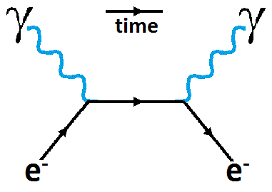

The particle is the abstraction. The event is what's actually there.
There is a chair in your room. You know what a chair is.

But what actually is it?
Wood, you might say. Or plastic, or metal — whatever it’s made of. But those materials are made of molecules. The molecules are made of atoms. The atoms are made of a nucleus and electrons. The nucleus is made of protons and neutrons. Those are made of quarks. And quarks, as far as we can tell, aren’t made of anything — they are excitations of a quantum field.
So the chair is, at bottom, a pattern of excitations in a field. Not a thing at all. A happening. A process stable enough and slow enough that we experience it as solid.
Most people have heard this and filed it under “interesting facts about atoms.” But there’s a step further that usually gets skipped.
We don’t actually touch the fields and quarks either. Everything we know about them — everything we know about anything — comes through interactions. Photons bouncing off surfaces and hitting our eyes. Electrons in our fingertips repelling electrons in the chair. Particles colliding in an accelerator and leaving tracks in a detector. We never arrive at the thing itself. We always arrive at its effect on something else.
Which raises a quiet question: is “the thing itself,” stripped of all its relationships, even a coherent idea? Or is the chair — all the way down — nothing but a web of interactions? Not a thing that has relationships, but a pattern of relationships that we call a thing?
The philosopher Ludwig Wittgenstein pressed on the word “chair” from the language side and found the same instability. In his Philosophical Investigations he asked: what are the simple constituent parts of a chair? The bits of wood? The molecules? The atoms? And then he made a move that still catches philosophers off guard: “It makes no sense at all,” he wrote, “to speak absolutely of the ‘simple parts of a chair’.” The question doesn’t bottom out into a final answer. It dissolves.
Wittgenstein was pointing at something about language and meaning. But the dissolution he found in the word “chair” maps onto a dissolution in the thing itself. Both inquiries — the linguistic and the physical — arrive at the same place: there is no bedrock object. There is process, pattern, event. And every event is only known through its relationships with other events.
This isn’t just a physics fact filed away under “interesting things about atoms.” It changes the picture in a way that matters.
If the universe is made of things — objects with fixed properties sitting in space — then experience is an add-on. Something that brains do somehow. A product that gets generated somewhere along the line. And the question of how is genuinely baffling.
But if the universe is made of events — each one occurring, completing, passing its character forward through relationships — then the picture is different from the start. An event isn’t just an outside. Something happens. And something happening is not the same as something just sitting there.
That opening — between the happening and the just-sitting-there — is where the next seedpod lives.
A note on language: from here on, we’ll sometimes say “things” because that’s how they feel — but we mean events stable enough to look permanent.
Alfred North Whitehead (1861–1947) — mathematician, co-author with Bertrand Russell of the Principia Mathematica, and late in his career a philosopher of nature — argued that Western thought had made a specific and consequential error at the foundation of modern science. He called it the fallacy of misplaced concreteness: taking an abstraction and treating it as if it were the concrete reality.
The abstraction in question is the thing — the enduring object, the particle, the substance with fixed properties. Science proceeded by abstracting objects from the flow of events, assigning them stable properties, and calculating their interactions. This was enormously productive. It gave us Newtonian mechanics, chemistry, engineering. The error was not in using the abstraction — it was in forgetting it was an abstraction. The particle became, in the scientific imagination, the basic unit of reality. The event — the happening, the moment of occurrence — was demoted to something that merely happened to objects.
Whitehead’s inversion: the event is primary. The particle is what you get when certain kinds of events are stable and repeating enough to seem permanent. A rock is not a thing that endures — it is a family of events (Whitehead’s technical term: a “society of actual occasions”) that keeps reproducing its own pattern closely enough that we rightly call it a rock. The pattern is real. The underlying rock-substance is the abstraction.
The chair example raises a deeper version of this point: we never actually access the thing itself. We access its effects — photons, force, interaction. This is not a new observation. Immanuel Kant (1724–1804) built his entire philosophy around it. The thing-in-itself, the Ding an sich, is permanently inaccessible, he argued. All we ever have is the phenomenon — the thing as it appears to a mind structured to receive it. Kant treated this as a permanent limitation. We are locked out of the thing itself; the best we can do is describe the appearances systematically.
Whitehead agrees with the diagnosis but rejects the conclusion. Rather than accepting that the thing-in-itself is inaccessible, he dissolves the concept entirely. There is no hidden substance underneath the relationships. The actual occasion just is its feelings — its takings-in of what surrounds it. (Whitehead’s technical term for this is “prehension,” from the same root as “apprehend.”) The relationships don’t point toward a hidden thing; they are the thing. The web of interactions is not a veil over reality. It is reality.
Physics arrived at a structurally identical position from the opposite direction. The physicist Carlo Rovelli’s relational quantum mechanics goes further than standard quantum field theory: quantum states themselves are not absolute. They are relative to an observer or measuring system. An electron does not have a definite spin until it interacts with something. There is no view from nowhere, no set of properties the electron has independently of its relationships. This is not a philosophical gloss on quantum mechanics — it is one of its most carefully developed interpretations, and it says exactly what Whitehead said: the interaction goes all the way down.
Wittgenstein’s analysis of “chair” approaches this from yet another direction — not physics or metaphysics but the logic of language. Ludwig Wittgenstein (1889–1951), in Philosophical Investigations, demonstrated that ordinary nouns like “chair” do not name fixed essences. They name clusters of family resemblances — patterns of use, contextual regularities — that have no single defining feature. The word “chair” works perfectly well in practice. It breaks down under philosophical pressure not because our language is defective but because it was never pointing at a fixed thing in the first place. There is no essence of chair waiting to be named. There is a practice of calling certain events and configurations “chair,” and the practice is what carries the meaning.
The convergence of Whitehead, Kant, Rovelli, and Wittgenstein on the same dissolution of the self-subsistent thing is not coincidence but pressure — the accumulated strain of pressing on the question from multiple directions at once. None of them, alone, is decisive. Together they suggest that the thing-based picture of reality is the map, not the territory. And a map that leaves out the relationships — that treats the thing as prior to its interactions — has left out what is actually there.
The implications run through all of these seedpods. If events are primary and constituted by their relationships, then every event has two sides — an outside that physics describes, and an inside that it does not. That is the territory of Everything Has an Inside. If the self is a stable pattern of events rather than an enduring substance, that is The Self Is a Pattern, Not a Thing. If the field is the medium through which events reach each other, that is The Field Is the Medium of Feeling.
Whitehead, A.N. Process and Reality. Macmillan, 1929. The primary text. Part I develops the fallacy of misplaced concreteness; Part II develops the doctrine of actual occasions.
Whitehead, A.N. Science and the Modern World. Macmillan, 1925. More accessible introduction to the critique of substance-based thinking.
Kant, I. Critique of Pure Reason. 1781. The foundational text on the thing-in-itself and the limits of human knowledge.
Rovelli, C. Relational Quantum Mechanics. International Journal of Theoretical Physics, 1996. The original paper proposing that quantum states are relative to observers, not absolute.
Rovelli, C. Reality Is Not What It Seems. Riverhead, 2017. A physicist's accessible account of the dissolution of the object in quantum gravity.
Rovelli, C. The Order of Time. Riverhead, 2018. On the dissolution of the thing-based picture of time; convergent with Whitehead from within physics.
Wittgenstein, L. Philosophical Investigations. Blackwell, 1953. §47 on the simple parts of a chair; §66–67 on family resemblance.
A plain wooden chair in a pool of light. VO: Just a chair. We know what a chair is.
Extreme close-up of wood grain, zooming in through molecules, atoms, empty space, into a field alive with fluctuation. VO: At the bottom of the chair — there is no chair. There are fields, events, disturbances propagating through space. The chair is what those events look like from far enough away that “chair” is a useful word for what’s happening.
Back to the chair, unchanged. VO: This isn’t a fact about how small things are. It’s a fact about what kind of universe we’re in. A universe of things just sits there. A universe of events is always happening.
Time-lapse: the chair aging — wood darkening, dust settling, light moving across it. VO: Even at the scale we can see, it’s happening. It never stopped. We called it a thing because the event was so slow and stable we could forget it was an event.
Cut to black. Text: The particle is the abstraction. The event is what’s actually there.
Primary illustration: A single wooden chair rendered in three simultaneous views — like an architect’s drawing crossed with a physics textbook. On the left: the chair as we see it, clean and solid. In the center: the chair as molecular structure, recognizable but strange. On the right: the chair as field excitation — the same shape suggested by a pattern of waves and disturbances in a glowing field. No chair-substance anywhere. Caption: Three descriptions. One event.
Shareable graphic: A painted pipe in the style of Magritte. Beneath it, in careful script: “This is not a thing.” The joke lands immediately for those who know the painting. For those who don’t, the point still stands on its own.
Video thumbnail: Extreme close-up of wood grain, lit dramatically from one side, on the verge of becoming abstraction. The grain is almost recognizable as wood but almost not. Text overlay: “What is a chair, actually?” No answer given. The image is the question.